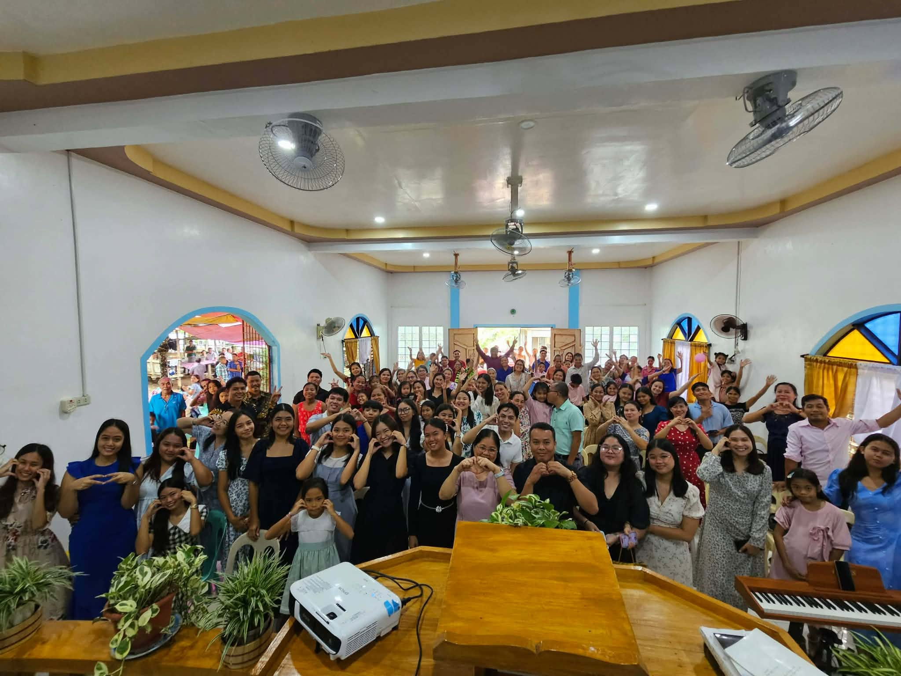

Welcome to Northern Tablas District of Seventh-day Adventist Church
|
Who are we?
The Northern Tablas District (NTD) is part of the Romblon Adventist Mission, dedicated to sharing the gospel and preparing hearts for the soon return of Jesus Christ. Guided by Scripture and the Holy Spirit, we build disciples through Christ-like living, healing, serving, teaching, and training. Together, we look forward to God’s ultimate promise—the restoration of all creation into full harmony with His righteousness.
Our churches
San Agustin
- Dubduban (Mother Church)
- Sugod
- Binongaan
- Camantaya
Sta. Maria
- Concepcion Norte (Mother Church)
- Concepcion Sur
- Paroyhog

Organizational chart
Upcoming Events
Announcements
Gallery
Choose an Album